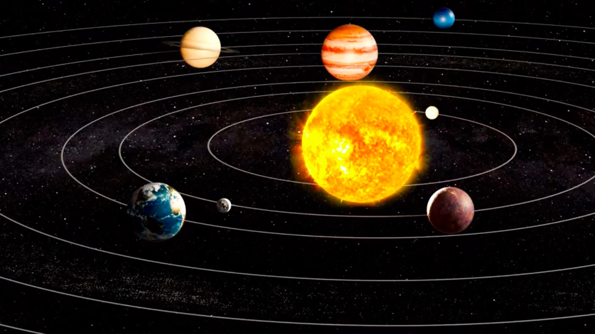
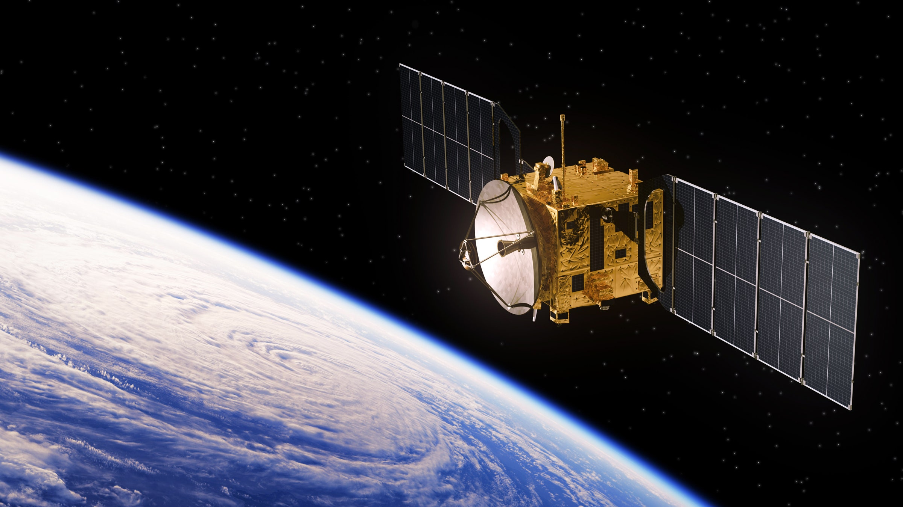

BEGINNER'S GUIDE
About Astronomy
Astronomy (from Greek: ἀστρονομία, literally meaning the science that studies the laws of the stars) is a natural science that studies celestial objects and phenomena. It uses mathematics, physics, and chemistry in order to explain their origin and evolution. Objects of interest include planets, moons, stars, nebulae, galaxies, and comets. Relevant phenomena include supernova explosions, gamma ray bursts, quasars, blazars, pulsars, and cosmic microwave background radiation. More generally, astronomy studies everything that originates outside Earth's atmosphere. Cosmology is a branch of astronomy that studies the universe as a whole.
More info hereAltitude (alt.) is the angle between the object and the observer's local horizon. For visible objects, it is an angle between 0° and 90°
Azimuth (az.) is the angle of the object around the horizon, usually measured from true north and increasing eastward.
More info hereAzimuth octant is the approximate cardinal direction (north, east, south, west).
More info hereNorad ID is a sequential nine-digit number assigned by United States Space Command in order of discovery to all artificial objects in Earth.
More info hereBinoculars and Telescopes
What separates a $200 pair of binoculars from a $2,000 pair with the same magnification and aperture? The complexity of the AR coatings, the quality of lenses and prisms, and the precision of the lens shape. An expensive pair gives crisp, high-contrast views without distortion right out to the edge of the field. Nice to have, especially for daylight use, but not critical for casual astronomical use.
More info on cosmicpursuits.comFavorite objects

The International Space Station (ISS) is a modular space station (habitable artificial satellite) in low Earth orbit. It is a multinational collaborative project involving five participating space agencies: NASA (United States), Roscosmos (Russia), JAXA (Japan), ESA (Europe), and CSA (Canada).
More info on Wikipedia
The Hubble Space Telescope (often referred to as HST or Hubble) is a space telescope that was launched into low Earth orbit in 1990 and remains in operation. It was not the first space telescope, but it is one of the largest and most versatile, renowned both as a vital research tool and as a public relations boon for astronomy.
More info on Wikipedia
Tianhe, also known as the Tianhe core module, is the first module to launch of the Chinese large modular space station. It was launched into orbit on 29 April 2021, as the first launch of the final phase of Tiangong program (Project 921), part of the Chinese space program.
More info on Wikipedia